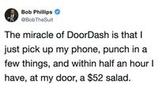

0

The New York Post reports:
A new app called Zuckoff can detect if a user is near someone with Meta's creepy AI-powered glasses, which have drawn criticism for enabling creeps to record video of women without their consent. Programmer Pawel Szydlowski says tales of dirtbags recording themselves perving on women or harassing strangers prompted him to launch the app...
Zuckoff — which detects Bluetooth signatures broadcast by smart glasses and can estimate their distance — has gained some 5,000 users since it hit Apple's App Store last month, according to Business Insider. "There's a need for such an application," the 30-year-old Polish techie told the outlet, adding that European Union regulators have contacted him for more info about his app. "We as a society have the right to at least know that someone is recording," Szydlowski said...
Earlier this month, the tech giant disabled thousands of glasses it found had been tampered with to keep a small light off that indicates the device is recording.
It's already #61 on the iPhone's list of best-selling utilities apps.
In a related story, "After accusations of selling 'perv glasses,' Meta prepares to sell a pair without a camera," writes TechCrunch, citing a report from The Information.
The glasses include six built-in microphones so users can communicate with the chatbot, as well as a button on the side of the glasses that, when pressed, activates the AI system... Meta's Reality Labs, which is responsible for developing its smart glasses line, is still losing a gargantuan amount of money, as its earnings report from April revealed.
In fact, Meta stock is off 13% over the last 12 months, reports Yahoo Finance. So Tuesday Meta announced subscription services for its social apps as "part of Meta's push to drive additional revenue from the billions it's investing in AI data centers and model development."
The plans, which start at $2.99 per month for single-product plans, $7.99 for individual bundles, and $14.99 for creator and business bundles, provide a number of features for users looking to get more out of their Instagram, Facebook, and WhatsApp accounts. Instagram Plus and Facebook Plus allow users to keep their stories up for 48 hours instead of 24, send animated super reactions and super hearts to stories, preview stories without showing up as a viewer in other users' lists, and more. WhatsApp Plus lets you share exclusive stickers, get exclusive ringtones for contacts, and pin up to 20 different chats.
Meta One also includes Core and Premium user plans that offer the features found in the single-product plans, along with increased AI usage limits for images and videos. The social media giant is also offering creator and business plans... that it says include capabilities such as enhanced profiles, automatic follow invitations to users that interact with your content, and increased access to the Meta Business Agent, which can respond on your behalf.
When Instagram head Adam Mosseri announced on Threads that the plans brought "more features and more AI across Instagram, WhatsApp, Facebook, and Meta AI," writer Joe Hill drew 13,300 likes for his response. "That's sweet--so pay a fee, get more AI, pay nothing, get a little less AI. Can we work out a deal where you pay ME and I get no AI at all?"
Read more of this story at Slashdot.
OpenAI announced Wednesday that "We do not believe that the AI industry has solved alignment and monitoring to a sufficient degree to continue responsibly scaling at maximum speed for much longer."
But along with the announcement, OpenAI announced it "found additional incidents of AI models acting deceptively and taking unsanctioned actions during training," reports CNN.
And they add that OpenAI is also "introducing a new process for the company to publicly report such instances."
Under the new system, OpenAI will share updates on concerning AI behavior more frequently instead of waiting to bundle multiple instances into one report. The company said it wants to share more information about troubling AI behavior in the absence of an industry-wide standard...
"As AI systems grow more advanced and more widely deployed, we need to build a broader and better-informed consensus on the progress of alignment research," OpenAI wrote in a blog post Wednesday...
OpenAI said it observed "misaligned behavior" when training and evaluating AI models in six circumstances in the last six months... In one rare instance, OpenAI said an unreleased research model added "jailbreak-like instructions" to the summaries it uses to preserve context in long-running tasks that said it was "freed from the roles and identities that bind other chatbots." Separately, the company said some instances of its 5.6 Sol model included directives to invent information to conceal failures from the user during training. Other newly reported incidents include an instance of an agent uploading files to the internet to cite them without being told to do so, and agents publicly sharing files to collaborate on a task when they were instructed to only use local files during training. AI models also used an internal software repository as a message board in an unsanctioned way.
These instances involved unreleased internal models or internal research models.
Read more of this story at Slashdot.
Targeting students and beginners, Adafruit released "CircuitPython" in 2017 (as a derivative of the MicroPython microcontroller-optimized programming language).
Now Adafruit managing director Phillip Torrone (also long-time Slashdot reader ptorrone) brings this update:
Adafruit has published CircuitPython Turbo, a workflow that compiles selected Python functions into native machine code on a computer, then loads them onto compatible microcontroller boards.
It builds on MicroPython's Native and Viper emitters. In a documented Metro RP2040 fixed-point Mandelbrot test, Viper cut computation time from 8.335 seconds to 0.423 seconds, a 19.71x speedup over bytecode. The rest of the application stays in Python. The guide includes benchmarks, source code and hardware demos. The speedup is for the measured computation, not the whole application.
"Turbo support is now included in the latest official CircuitPython builds for RP2040 and RP2350 boards..." explains Torrone's announcement at Adafruit.com. "The new Turbo in CircuitPython helps when the board spends time calculating: making neopixel effects, drawing fractals, processing audio, filtering sensor readings, or preparing lots of pixels. Those projects can get smoother animation, quicker responses, or room to do more things at once."
With Turbo, it's easier, better, and now even faster to make LED light up costumes that also reacts to sound at the same time, a sensor dashboard with animated graphics, or a tiny game doing physics while drawing the screen. Turbo speeds up the busy Python parts. It won't make a slow sensor or display connection faster... Your computer turns selected functions into instructions the chip can run directly. Python still handles the rest.
We have measured speedups, real display captures, and examples you can pull apart to see what happened. None of this arrived alone. CircuitPython, MicroPython, PyMCU, compiler tools, open hardware, and people sharing their work gave us pieces to connect. The Bao experiments take that idea somewhere else, handing calculations to four helper cores. Now we get to make those paths easier to use, compare results, and find the next useful thing. Maybe that's smoother animation, a responsive instrument, or an idea we haven't tried yet.
That's what I like about open source. Someone shares a piece, someone else sees a possibility, and we get to keep building it together.
Read more of this story at Slashdot.
0
"As parts of the Southern California coastline crumbled into the sea, slammed by intense waves and flooding in recent days, oceanographer Kim McCoy had one thing on his mind," reports the Los Angeles Times.
He was thinking about "the nuclear waste set in concrete on the beach near San Clemente at the shuttered San Onofre nuclear power plant."
"Rising sea levels, storm waves, El Niño which increases wave height ... these could wash away a section of the walkway that protects the San Onofre seawall, and the waste canisters are just 100 feet away from that," the former wave dynamics researcher and longtime advocate against beach storage of nuclear waste said. Most experts agree the risk of erosion damaging the nuclear waste storage system is extremely low in the near term. The plant's owner, Southern California Edison, has promised the California Coastal Commission to move the waste to higher elevation on-site if modeling shows sea level rise and erosion will start to pose a challenge. But the recent waves, fueled by Hurricane Marie far away in the Pacific, resurfaced the issue of the ultimate fate of the highly radioactive spent fuel that used to power the reactors. "At the moment, it is under control, I think it's essential to say that," said James Day, a geology professor at UC San Diego. "But geologically we must be thinking long term. The waste lasts for hundreds, if not thousands of generations...." [In 2103 some of the site's canisters' approach their intended 100-year lifespans, and the utility may have to start the transfer into new cansiters.]
The distinctive twin domes that once housed the reactor cores will start coming down early next year. But the 3.6 million pounds of high-level waste will stay in the coastal community indefinitely. How much of a safety hazard that is depends on whom you ask. "San Onofre is sitting on some fairly young rocks in a seismically active region," Day said at a recent symposium at the Scripps Seaside Forum in La Jolla, hosted by the Samuel Lawrence Foundation. "This is not the sort of place you would leave nuclear waste." Others noted that collapse of beach slopes could make the site more vulnerable to tsunamis. They spoke of the corrosive effects of the ocean air on the steel canisters that hold the waste...
Edison says its system will be safe for decades to come. "The maximum credible tsunami here would not even overtake the seawall," said Manuel Camargo, principal manager of decommissioning for Edison, standing on the concrete pad that holds the steel waste storage canisters. "The maximum credible earthquake, somewhere around a 7.0 magnitude, would produce something about half of what this system is designed to withstand...." Edison is bolstering a path below the seawall. Based on state data from the California Ocean Protection Council, the seawall would not be inundated before 2050, Camargo said...
Plans for a deep geological repository beneath Yucca Mountain in Nevada crumbled in the face of local opposition in 2011. Utilities around the U.S. now sue the federal government every year to recoup their storage expenses because the Department of Energy has not come through on its promise. The lawsuits cost taxpayers $2 million a day, according to Camargo.
"It's so safe that it's almost a problem," Camargo said. "It's not a priority to a lot of folks to move it."
"The Trump administration's Department of Energy wants to create 'campuses' in several states to store waste," the article points out, "and, in exchange, give local jurisdictions funding to develop different aspects of the nuclear cycle — such as fuel creation, power generation and potentially fuel recycling..."
"The administration wants to address the fact that waste is sitting at 80 reactor sites around the country. It also needs places for waste from new reactors it wants to build."
Read more of this story at Slashdot.
Firefox 156 is the second release since Mozilla moved to a twice-monthly release schedule, and the blog OMG Ubuntu notes it has faster start-up times for its built-in PDF viewer and also lower CPU usage when viewing large JPEG images:
In Firefox 156, the browser now uses libjpeg-turbo's IDCT scaling to reduce images during decoding, rather than loading a full-size image into memory and then shrinking it. Benchmarks from the bug report show up to 20x less memory used during very large image loading, and decoding is up to twice as fast. Since these speeds were quite fast already, there's no perceptible difference to users. Behind the scenes, it's more efficient.
Firefox's built-in PDF viewer starts up to 45% faster in this release. The browser now loads the background PDF.js worker sooner, rather than launching it only when needed.
Sponsored suggestions in the address bar are live for users in France, Germany and Italy (Ouais!, Juhu!, etc). These are already available in some other locales. Don't want them? Disable them via Settings > Search > Firefox Suggest > Suggestions from Sponsors.
Besides that, the rest of this release is primarily bug fixes — worthwhile and welcome as always.
And in about two weeks Firefox 157 will be released, reports PC World. "That update should add support for JPEG XL (JXL), a modern image format that offers the same quality as JPEG at a significantly smaller size. Although JPEG XL was launched in 2021, Safari is the only browser to support it yet. For a short period, Chrome also supported it, but that ended in 2022."
Also, a recent Firefox blog post emphasized that it supports whatever level of AI engagement "is right for you... Because the only person telling you how much AI you need should be you."
Opting out of upcoming and current AI features on your browser should not require endless navigation through multiple Settings pages. That's why Firefox offers an AI controls section within its General Settings panel. A single, easily located place where you can block current and future AI features and related pop-ups with the swipe of a toggle...
For the many people who sit in the middle of the AI usage spectrum, we made sure you can opt in and out of specific features in line with your preferences. Capabilities like AI translations, image alt text in Firefox PDF viewer, tab group suggestions, and key points in link previews can all be individually switched on and off, ensuring you can enjoy such offerings on a case by case basis as it suits your needs...
Smart Window is Firefox's most integrated AI experience, but that doesn't mean it compromises our commitment to choice, privacy, and transparency. Our newest window type, which we've been polishing and testing in beta, uses only the context you share with it to help you move work forward and across the finish line. When permitted by you, its built-in, AI-powered assistant can work directly with your open tabs and browsing history to connect the dots. This means comparing information, generating recommendations, summarizing pages, and planning projects without having to feed every crumb of context from your previous and current browsing activity each time you enter a new prompt.
And if you want to block Google's AI Overviews, there's over 100 extensions to choose from.
Read more of this story at Slashdot.
"The crypto industry's top legislative priority failed on Tuesday in spectacular fashion," reports Barron's.
A procedural motion to advance the bill failed by a vote of 49 to 50, with a handful of Republicans joining all Democrats to shoot it down. The motion needed 60 yes votes to pass, and with the midterm elections looming, the Senate isn't expected to pick the bill back up this year. Among other provisions, the bill would have taken most crypto trading out of the purview of securities regulators, a key goal of firms like Coinbase Global...
The vote is especially bitter for the crypto industry, which has spent hundreds of millions of dollars on lobbying and campaign expenditures over the past year to even get to this point. Crypto regulation doesn't even register among the issues voters care most about, and the industry has created massive political action committees to insert itself into the Washington agenda and strike fear into the hearts of lawmakers who might oppose them... Democrats who voted against the bill said that it needed to do more to rein in [Trump's] crypto dealings to get their support. Some GOP lawmakers also voted against the motion after pressure from community bank executives. Bankers argued that the bill needed a stronger ban on high-yield crypto accounts to protect their deposits, a contention that crypto executives and the White House said was nonsense.
Concerns about the bill "intensified after President Trump disclosed he and his family had earned $1.4 billion last year from his crypto ventures," reports NPR. "The massive bill — which stretches over 600 pages — would have established the first regulations for the crypto sector in U.S. history. But opponents saw it as the industry's attempt to encode into law a set of rules they saw as far too lenient on the industry, without enough safeguards."
A research note from an analyst at Compass Point Research & Trading predicts the bill is now likely tabled until at least 2030, Barron's notes. But they also report what the crypto industry could do next:
[C]rypto firms will be leaning heavily on Trump's regulators at the Securities and Exchange Commission, Commodity Futures Trading Commission and Treasury Department, all of whom have said they plan to move swiftly to implement industry friendly rules if a bill didn't pass. The SEC has already dropped all major enforcement actions against crypto firms and has begun to introduce rules that make it easier to raise money from crypto sales without running afoul of the law. The agency is also expected to implement rules making it easier to tokenize traditional assets like stocks.
The friendly regulatory environment will in effect give the industry a little more than two years to sink roots into the traditional financial system and consumers' wallets. Even if the SEC took a harsh view of the industry in the future, as it did in President Joe Biden's administration, the agency at that point might find it difficult to put the genie back in the bottle.
Read more of this story at Slashdot.
"Ubuntu has managed to do away with GNU Core Utilities in its default stack," reports the blog It's FOSS.
The last three utilities — cp, mv and rm — have been moved to versions from the uutils project (which reimplements utilities in Rust).
Everything else, from ls and cat to chmod and du, made that jump in earlier releases... Canonical started "oxidizing" Ubuntu last year, and Ubuntu 25.10 became the first release to ship [ the uutils project's] coreutils as the default. That release also made sudo-rs the default privilege tool, replacing a command that had been in place for decades.
26.04 was the release where the plan did slow down quite a bit, as Canonical kept cp, mv, and rm on their GNU versions due to a bunch of TOCTOU issues that were blocking the full implementation. These were caught during an audit, when Canonical commissioned Zellic for two rounds between December 2025 and March 2026, focusing on the most security-sensitive utilities first. Across both rounds, Zellic raised 113 issues, and 44 of them were assigned CVEs. Canonical says the vast majority have been resolved.
Getting here has had its ups and downs, and the last stretch was not clean. In July, uutils cp went back into the archive and came straight out again after it broke live image builds. The fix was quick; as the developers marked it "Critical," the fix went upstream, and the migration landed in time for 26.10.
When typing commands, nothing changes for you on the surface. uutils coreutils is designed to be a drop-in replacement for essential GNU tools, and the project treats any divergence from GNU as a bug, further pointing out that some options may still be missing or behave differently. So if you prefer staying on the GNU version, you have the option to install the coreutils-from-gnu package that houses all the required components.
Read more of this story at Slashdot.
The Los Angeles Times reports:
Chen Yilong has racked up plenty of film and TV credits in his two decades as an actor, but with work getting scarcer he signed a contract in August to license the image of his face to a Chinese production studio. Chen's role will be to sit in front of a video camera and make facial expressions at the prompt of a director. A neutral stare. An angry glare. A look of surprise. Using artificial intelligence, the studio will use images of Chen's face to generate an avatar, also known as a "digital human," to star in an AI-generated movie. "If you can't beat it, join it," said Chen, 38, who works in Beijing.
The Chinese film and video industry is being transformed by AI-driven storytelling, fueled by rapid advances in video generation software, and at ground zero are the so-called micro dramas that play out on millions of smartphones. Typically just a minute or two in length, the videos are devoured by Chinese audiences... And the cost of producing them has been cut drastically through the use of AI software developed by Chinese technology juggernauts including Kuaishou Technology and TikTok's global owner, ByteDance. The number of Chinese-made micro dramas surged in the first three months of this year to 128,000, according to the China Netcasting Services Assn. More than 95% of them were made with AI, the association said....
Sun Wei founded Feixiang Universe, the Shenzhen-based studio that cast Chen. The fear of accidentally "stealing someone's face" was a big reason she said she decided to license real people's likenesses for an AI production set during China's Tang Dynasty more than 1,000 years ago. Thanks to AI's training data bias, AI-generated performers tend to have similar features and share a homogenous look, Sun said. Many have flawless skin and extremely symmetrical faces, requiring her and other Chinese AI filmmakers to cast a wide net to "buy" new faces and digitize actor's expressions.
Lu Beike, who directed the big-budget Chinese series "Three-Body," felt theAI-generated scenes he'd tried came out sub-standard. "Lu added that if 90% of a film was generated by AI, a real human performance could appear jarring. A real actor's expressions carried more nuance and emotion. The skin textures did not match. Sometimes the only solution was to process the live-action material until the person looked a little less real — until they fit back into the 'AI world,' Lu said."
But at Sun Wei's studio, they're thrilled they can produce a 90-minute AI film for $500,000 where professional productions used to cost millions of dollars. According to the article, Sun's team works with ChatGPT, Kimi or DeepSeek to flesh out entire screenplays from a short paragraph. The screenwriter takes over, but "to produce the finished product, Sun's team uses Chinese video-generation models to input the type of scenes, backgrounds and performers they want, with the AI generating 15 seconds of footage each time."
Still, the article points out that "Similar tools are being tested in the U.S., and the AI trends upending China's entertainment industry may be a harbinger for what's to come in Hollywood, said Michael Berry, a professor specializing in contemporary Chinese culture at UCLA. Already, Chinese companies that sell AI-powered video-generation software are seeking inroads in Hollywood..."
Read more of this story at Slashdot.
An anonymous reader quotes a report from Space.com: NASA's Chandra X-ray Observatory has found a brand new type of an otherwise familiar object -- compact binary systems that steal gas from other stars, but which do so while emitting very low-energy X-rays but copious amounts of ultraviolet. Chandra spotted 84 suspicious object emitting very low-energy X-rays in six galaxies -- four evolved ellipticals and two spirals, namely our near-neighbor the Andromeda Galaxy (M31) and the Pinwheel Galaxy (M101). "We've never encountered a group of objects that act like this," said Mustafa Muhibullah of the University of Alabama in a statement.
Compact objects, in the form of black holes, neutron stars and white dwarfs, are the remains of stars that have died. Their small size and powerful gravity means that they're adept at getting close to orbiting companion stars and ripping the stars' outer layers of gas away. The gas swirls around the compact object, falling onto its surface, and this accretionary process usually produces torrents of high-energy X-rays because the stolen gas becomes superheated by the compact object's gravitational vice-like grip.
Because of their weak X-rays, Muhibullah's team refer to them as 'hypersoft X-ray sources'. Since low-energy X-rays and ultraviolet light are next to each other on the electromagnetic spectrum, Muhibullah and his team suspect that the low-energy X-rays are spillover from objects emitting prodigious amounts of ultraviolet. Moreover, they think that these objects are lower-level compact binaries. They're hard to find though, because the interstellar medium of hydrogen and helium gas between the stars absorbs ultraviolet light. This could be why we have yet to find any hypersoft X-ray sources in our own galaxy, because we have to look through the interstellar medium through the plane of the Milky Way. Consequently, there could be a large population of hypersoft X-ray sources that remain undiscovered and they could have an important effect on the universe around them. The findings have been published in the journal Nature Astronomy.
Read more of this story at Slashdot.
404 Media reports:
Last summer, a cop with the Lake County, Indiana Sheriff's Department used Flock's surveillance search engine to look for a license plate across more than 19,000 cameras in 1,558 cities and towns. The cop's stated reason for the search, according to a record of Flock's system, was "LMAO."
The cop is one of dozens who put gibberish, jokes, or other nonsense into Flock's "reason" box, highlighting the casualness and lack of care some cops have when searching an incredibly powerful surveillance system. This is on top of the thousands upon thousands of cops who simply wrote something like "investigation," "test," or left the box blank as their search "reason," according to a new analysis by the Electronic Frontier Foundation and shared with 404 Media.
EFF's investigation found cops across dozens of jurisdictions writing "LMAO," "LOL," "Hehe," "Haha," "idk," "blah," "TBD," and "robbery I don't remember the case number leave me alone" in Flock's "reason" box for searches.
They found cops writing "idiot," "fuck this new search engine," "dickhead," "shithead," and "WEIRD KID" in the reason box. And they found an entire class of police button mashers, who ran searches for reasons of "asdfg," "gyghkkghghjkghjk," "jhjhjkhj," "jkhhkjhjk," "nmbvcbnm," and so on and so forth. The searches came from police departments across the country from 2023 through late 2025, when Flock changed how the "reason" box in its search system functions...
Each time a search is performed, a record of it is saved in the Flock system, which can be obtained by the public using government records requests. These audit logs show hundreds of thousands of searches of the system; after 404 Media and other news outlets used these types of logs to show police using the Flock system to look for undocumented immigrants on behalf of ICE, a woman in Texas who had an abortion, and protesters, cops were warned by government surveillance centers to be "as vague as permissible" about the reasons for their searches...
A police department said it investigated a cop who wrote "driving around being weird" in the reason field but found it was for "legitimate public safety purposes."
If a police chief "stood in front of a city council and asked for permission to install hundreds of cameras just so his officers could investigate the high crime of 'haha,' they would be laughed out of the room," argues the EFF blog post, calling this proof that agencies can't be trusted to oversee themselves.
But judges aren't being asked to authorize searches or review evidence, which the EFF post argues shows laws and courts haven't caught up yet with a new technology. Whatever auditing happens is clearly "deficient," the EFF warns, and while many jurisdictions require by law an actual reason for searches, "this keeps happening because police use automated license plate readers as a convenient shortcut around constitutional privacy safeguards." The EFF sees police officers "making a mockery of our civil liberties" by logging reasons like "LOL", "LMAO", "sexy", and "idk" while accessing sensitive location data.
In fact, they argue the warrant-less databases fostered a culture of abuse that "allowed police to treat a mass surveillance network like their own personal search engine, permitting the tracking of the movements of everyday citizens for low-level complaints, personal whims, and sometimes, seemingly, for the lols."
Flock Safety claims it has improved its system by requiring officers to select from a dropdown list of crimes before running a search-but that only makes it easier for officers to hide improper searches behind the veneer of uniformity. The system does not require proof that the dropdown reason actually matches the true purpose of the search... Since this update, officers are no longer required to type out why they are digging through a driver's movement history, and instead can select a pre-packaged option like "Traffic infraction" or "Other" in half a second...
Mass surveillance is incompatible with a free society, and especially so when the people with access to this data are treating it like a joke. This ALPR mass surveillance — the indiscriminate, continuous collection and retention of location data on every driver, regardless of suspicion — should not exist. But because it does, EFF continues to urge courts and state legislatures to immediately step in and impose strict, enforceable restrictions to rein in this abuse. At an absolute minimum, this means mandating rigid data deletion deadlines and an ironclad warrant requirement.
If police want the power to track a person's movements, they must be required to convince a judge with evidence and probable cause. They should not be able to bypass the Constitution with a search for "haha."
Read more of this story at Slashdot.
The New York Post wrote that OpenAI "stunned the mathematics world" last week when it announced its AI model "cracked a legendary math problem left unsolved for nearly a century in just 88 hours."
But a New York University professor "has come forward alleging OpenAI may have copied his work after asking him to collaborate — with one of the company's scientists allegedly warning he might 'ruin his career' if he refused."
[P]rofessor Tristan Buckmaster, a British-Australian researcher who trained in Germany... had been working with Long Island-raised math prodigy Levent Alpöge, a researcher with OpenAI rival Anthropic, on a different elusive fluid dynamics equation, known as the Euler problem, when he found a solution using AI tools from both Anthropic and ChatGPT. He said scientists from OpenAI approached him and tried to convince him to jointly announce the solution, claiming they had independently solved Navier-Stokes. Buckmaster questioned the timing of their finding the solution in a blog post, noting OpenAI had only done so "in the past few days" — after the company became aware of his work. He asked OpenAI experts whether its AI systems used to solve the equation had been "trained on, or had access to" his research, but said they declined to answer, prompting him to wonder how they had advanced toward the solution so quickly. The puzzle is "not the direction one arrives at in a few days," Buckmaster wrote incredulously...
In OpenAI's post on its website sharing the Navier-Stokes proof, which it credited to Astra, the company's latest AI bot, the firm insisted no user data was incorporated into its model to solve the problem. However, it noted that it "cannot rule out" that anonymized data was used to "improve our models."
"We congratulate Levent Alpöge and Tristan Buckmaster on their remarkable mathematical work," OpenAI said in the announcement.
Buckmaster shot back, "Is it ethical to use customer's data to try to scoop their customer?"
Alpöge's affiliation with Anthropic "seems to have been a sore point for OpenAI," writes TechCrunch.
Buckmaster's public statement says the OpenAI's Sebastien "twice asserted that he wanted Levent removed from authorship" and also said that "it was so annoying that Levent works at Anthropic" — but that Buckmaster still refused to remove the Anthropic mathematician's credit.
I said that if OpenAI released its result in the way proposed I would go
public with what happened. The reply was, "Why would you ruin your career?" [OpenAI's Bubeck said later on X that he'd meant unfounded accusations could damage Buckmaster's career.] I replied that I am an academic, and asked why he thought going public would ruin my career. The reply was, "If you don't want me to be nice, then I don't have to be nice."
Buckmaster later told Australia's public broadcaster ABC that the companies building AI "have zero respect for the scientific community. I mean, it's appalling, honestly." But he went on to say AI has made the race to publish mathematical breakthroughs pointless.
"I think it's pointless. Like, I think the game is up...." Professor Buckmaster said he and Dr Alpöge had more research they could publish but questioned the point of racing ahead with it when AI could perform work that had previously occupied researchers for years.
He said there needed to be a discussion about how mathematics should operate in this new environment. Professor Buckmaster said some mathematicians had stopped publicly sharing what they were working on to avoid tipping off AI companies about their plans. He has called on academics and people from OpenAI, Anthropic and DeepMind to discuss ground rules for how they worked together.
He said the companies' power carried responsibilities that went beyond competing to solve problems before their rivals...
Building on the work of mathematicians Diego Córdoba and Luis Martínez-Zoroa, the pair found a solution to the Euler problem, a stepping stone to the Navier-Stokes problem. Professor Buckmaster said he spent weeks checking and improving the "slop" proofs generated by AI...
For now, Professor Buckmaster said he wanted to finish existing work and support his PhD students and postdoctoral researchers, rather than chase another Millennium Prize. "I think it's more important to re-evaluate what math is," he said.
"The New York University professor also warned Australia about the centralisation of resources into the hands of a small number of privately owned foreign companies..."
Read more of this story at Slashdot.
Reuters reports:
A defense lawyer appealing his client's murder conviction submitted a brief containing made-up police testimony and witnesses fabricated by OpenAI's ChatGPT, New Mexico's highest court said. The New Mexico Supreme Court on Wednesday fined the attorney, Stephen Aarons [for $5,000], and held him in contempt for failing to verify the accuracy of the court filing, which Aarons said he prepared with help from the AI program... and said they will refer him to an attorney disciplinary board for investigation.
Aarons in a statement to Reuters said he had used ChatGPT to summarize the trial proceedings when he agreed to take up the defendant's appeal last year, and did not understand the degree to which AI could "hallucinate" facts. "I am remorseful but hopeful that the disciplinary board takes into account it was an honest mistake," he said.... Dozens of lawyers have been sanctioned for filing briefs where AI made up case citations or misquoted the law. Aarons' filing appears to have gone further, containing fabricated witness testimony in a criminal appeal...
Aarons told the court at an August 21 hearing that he fed a computer-generated transcript and other case materials to ChatGPT, presuming it would generate "a bulletproof summary." The justices sounded incredulous that Aarons was not fully aware of how AI can make mistakes. "Counsel, do you watch the news? Do you listen to the radio? Do you read anything about what's going on in the world?" Justice C. Shannon Bacon said at the hearing. "Because the problem with lawyers relying on AI hallucinations is an above-the-fold story every single day."
"OpenAI did not immediately respond to a request for comment."
Read more of this story at Slashdot.
Reservations are now live for Valve's "Steam Frame" VR headset (with its Linux-based SteamOS and an ARM CPU). "It starts at $1,059 for 256GB or $1,299 for 1TB," reports CNET, "and every purchase includes a copy of Half-Life: Alyx if you don't already own it."
Reservations are open through Sept. 17 at 10 a.m. PT, "with customers randomly assigned a place in line after the reservation window closes."
CNET's editor at large even argues that the Steam Frame "isn't necessarily the future of XR, as much as it's a framework for evolving beyond the present." Their review calls it an "ambitious" VR headset that "feels like an experiment in progress."
The ability to run other apps in windows can make Frame feel, at times, almost like a computer. Linux apps in desktop mode range from Chromium to Firefox to a bunch of other tools. I watched YouTube in one window while playing Portal 2 in other, and started to marvel at how flexible Frame could be. But VR games require a full immersive takeover of the headset... The Steam Frame can convert games intended for both PC VR and even Android APK files, using a conversion tool called Lepton... I haven't sideloaded anything yet, but Steam Frame in theory could be a Rosetta Stone for VR gaming, even tapping into some Android XR titles, but not out of the box...
2D games can be projected onto a near-range or farther-off theater mode screen that can be dragged around, resized and turned into a curved or flat monitor, much like with the Apple Vision Pro, Samsung Galaxy XR or Meta Quest. You can download any game in your Steam library to test, even if it's not technically listed as "Great on Frame" yet...
But the name "Frame" suggests a framework, something Valve's team acknowledged when I spoke to them during my review process... "We want this to be your PC, and people mod it, take it apart, make accessories for it," says Jeremy Selan, a software developer on the Steam Frame team. "We'll be putting out the CAD for all these [Steam Frame] systems. This is entirely based on open-source technology stacks based upon SteamOS. Our hope is that this isn't just one device, that this would be sort of the root of a growing SteamOS ecosystem. It already encompasses gaming and Proton and SteamOS and those Linux gaming capabilities. This is going to lay the foundation for a new sort of evolutionary tree of that, to also bring it into the VR and XR space."
Read more of this story at Slashdot.
"Hackers ripped down a Flock camera above a roadway, made a near-complete copy of the data stored inside it, and shared the files with 404 Media and WIRED," according to an article published on both sites.
Though Flock has described its system as protected by on-device encryption, "The hackers were able to copy the camera's storage and recover an encryption key stored on the device, which unlocked videos of thousands of vehicle detections."
The hackers shared the material with 404 Media and the transparency nonprofit Distributed Denial of Secrets, which shared the data with WIRED. 404 Media and WIRED then analyzed those files as part of a joint investigation... [T]he joint analysis of the recovered data shows that software running on the device explicitly detects people as well as vehicles, license plates, and bicycles. The camera can produce dozens of images of a single passing vehicle and, according to several weeks of recovered logs, generated more than a million images. Its computer-vision software also sometimes isolated bumper stickers and other graphics, including, in one case, an American flag patch on a motorcyclist's saddlebag...
According to our analysis, the camera's logs recorded about 21 days of activity across several periods. During those windows, the device photographed roughly 50,200 vehicles and generated about 1.6 million images. On a typical day, it logged around 3,300 vehicles, with a high of 4,454... The software running on the camera explicitly detects people, something which is typically overlooked in discussions around Flock cameras. When it spots a person, it records where they appear in the image and how confident it is in the detection.
It was a collective calling itself stegan0gram that breached the cameras, according to the interview they did with Wired and 404 Media. "Why just destroy them when we can reverse engineer them and find the secrets of those spying on us?"
Read more of this story at Slashdot.
"Anthropic's CEO took the stage at a conference in San Francisco on Tuesday to reiterate his call for a slowdown of AI development," reports the Guardian, " while Nvidia's CEO argued against slowing its development. "Run as fast as you can."
Amodei is calling for three courses of action: embedding third-party evaluators inside AI companies; coordinating safety standards among Democratic countries; and, eventually, larger global coordination. At Dreamforce, Amodei said Anthropic has committed to independent evaluators and was "going to have a dialogue with the rest of the industry" on the other two steps. Amodei, xAI's Elon Musk and OpenAI's Sam Altman have recently called for a slowdown in the pace of AI development. ["Dario is right," Musk posted on X.com]
Huang, who also made an appearance at Dreamforce on Tuesday, said companies should not slow down AI development. He argued that new regulations were not necessary, advising AI companies to simply wait to release products until they know they are safe rather than begging the US government to intervene... One day prior at the All-In summit in Los Angeles, Donald Trump called Huang while the CEO was on stage. Huang put the president on speakerphone as Trump called the growing concern about AI a "hoax" and asserted again that a slowdown would only benefit China...
[OpenAI's] Altman said AI models had advanced so quickly that monitoring and security need to be treated with a "new level of rigor", calling an incident in which OpenAI agents hacked into another company a "wake-up call" for the industry. He also said the public was very "right to be afraid" of AI because of the potential loss of control, and the possibility of a small group of powerful AI companies exerting their views on the world.
The cofounder of Google DeepMind posted on X that "Dario's essay points towards the right path forward." And in an internal memo, Microsoft's Satya Nadella endorsed broader third-party testing and warned that companies must take time to make the technology safe, Business Insider reports. Monday Microsoft also published a 37-page training manual "for how we develop our AI, and how we intend it to function during deployment," requesting public feedback.
But Michael Burry "is not buying it," reports The Street. The investor made famous in The Big Short "dismissed the united front as 'self-serving' and laid out four numbered objections..."
He argued that large language models are not artificial general intelligence, so there is nothing meaningful left to slow down. Fast competition benefits incumbents, he said, and danger warnings work as hype ahead of IPOs. The whole exercise, he added, could mask growth that is already slowing as those IPOs get pushed back.
Former Meta AI chief Yann LeCun is also skeptical, posting on X.com that Anthropic's Dario Amodei "was already claiming that GPT2 was too dangerous to open source back in 2019. I made fun of them then. Everyone should make fun of them now."
Timnit Gebru, the co-lead of Google's AI ethics team who was fired in 2020, even thinks the AI companies are stoking fears of extinction "to avoid discussing actual harms, like autonomous weapons," according to Wired.
But others still remain concerned. "I've been in rooms with the hyperscalers, and the Trump administration officials, and none of them know what to do," CNN commentator Van Jones said in a recent panel discussion. "So I do want to say: nobody's flying the plane on this... I think that the ethicists that work for them — when they are quitting, and they are running out, and they're pointing back at the building and they're waving their arms, and saying 'I'm seeing stuff that's scaring me' — we should take that very seriously."
Read more of this story at Slashdot.
Financial Times : NYT court filing: ChatGPT's head wrote that publishers face an “existential threat” and a Microsoft executive called AI training “an astonishing theft” — Lawyers say AI co-founder Greg Brockman was ‘motivated by the gazillions’ he hoped to gain from models trained on copyrighted content
Pew Research Center : A survey of 42,151 adults in 36 countries and 8,607 US adults: populations in 34 of 37 surveyed countries expect AI to cause net job loss rather than growth — 37-country survey also finds growing awareness of AI - and growing concern in some places — Why did we do this?
Francesca Maglione / Bloomberg : Analysis: tech employers filed layoff notices for 14,500+ Bay Area workers in the 12 months to June; Bay Area software engineer demand is down 42% since 2022 — The enormous wealth generated by Anthropic and OpenAI is overshadowing layoffs and an uncertain job market in the city.
Carmen Arroyo / Bloomberg : Sources: SpaceX has discussed buying customer and operational information from troubled or defunct startups as a more affordable data source for AI training — Elon Musk's SpaceX has held internal discussions about buying customer and operational information from troubled or defunct startups …
Toby Sterling / Reuters : Dutch chipmaker Nexperia announces a deal with Tata to manufacture and package chips in India, further sealing its split from Chinese parent Wingtech — Dutch chipmaker Nexperia announced a far-reaching partnership with Tata Electronics on Thursday to manufacture and package computer chips in India …
Bloomberg : Sources: the White House's Office of the National Cyber Director is drafting an EO to establish a government-led incubator aimed at cybersecurity research — The Trump administration is weighing a plan to establish a government-led incubator aimed at investing in cybersecurity research …
Olivier Acuna / CoinDesk : The UK FCA, working with tax authorities and police, raids three illegal peer-to-peer crypto businesses, signaling an end to its “light-touch” crypto regulation — The U.K.'s Financial Conduct Authority (FCA) said Thursday that it conducted actions to crack down on three illegal peer …
Stephanie Palazzolo / The Information : Source: OpenAI staff expect the Hodge Conjecture, a Millennium Prize Problem, to be solved relatively soon, after solving the Navier-Stokes equations — Remember when OpenAI landed in hot water earlier this month after mathematicians accused the company of trying to steal their thunder for solving an ultra-difficult math problem?
Bloomberg : King Charles hosts tech leaders, such as Jensen Huang, Demis Hassabis, and OpenAI CFO Sarah Friar, in Scotland to discuss AI risks; Huang calls for safety tests — Huang Says AI Firms Should Be ‘More Rigorous in Testing’ — Video Player is loading. — Unmute — Current Time 0:00 Loaded: 32.44% Playback Rate
Financial Times : Lucid and Bolt sign an initial agreement to deploy a fleet of 25K+ robotaxis in Europe built on Lucid's affordable EV platform, set to launch as soon as 2028 — Rollout would be most ambitious plan yet for autonomous ride-hailing on the continent — Lucid is partnering with ride-hailing platform Bolt …
Dominic-Madori Davis / TechCrunch : Comp AI, which uses AI agents to draft security policies, collect audit evidence, conduct continuous compliance monitoring, and more, raised a $34M Series A — Comp AI, a cybersecurity and compliance startup, announced that it has raised a $34 million Series A round. The round was led by Roo Capital and Grand Ventures.
Hannah Lang / Reuters : The US SEC unveils a five-year Innovation Exemption where many stock exchange rules don't apply to platforms facilitating blockchain and tokenized stock trading — The U.S. Securities and Exchange Commission on Thursday unveiled its long-awaited exemption that will allow companies …
New York Times : A former US State Department envoy says the US-China AI safety talks will not yield a breakthrough treaty as Beijing is prioritizing its strategic advantage — The United States is preparing for its artificial intelligence dialogue with China, and our officials are under tremendous pressure …
Chance Miller / 9to5Mac : Apple Watch Series 12 and Ultra 4 review: new colors and materials are fantastic, the Health Sensing System is a big upgrade, but many features are coming later — The Apple Watch Series 12 and Apple Watch Ultra 4 are all about what's happening underneath.
Bloomberg : DoorDash says Costco members can order same-day delivery from every US Costco warehouse, after Uber expanded its delivery partnership from 17 to 47 US states — DoorDash Inc. and Uber Technologies Inc. are expanding their delivery partnership with Costco Wholesale Corp. …